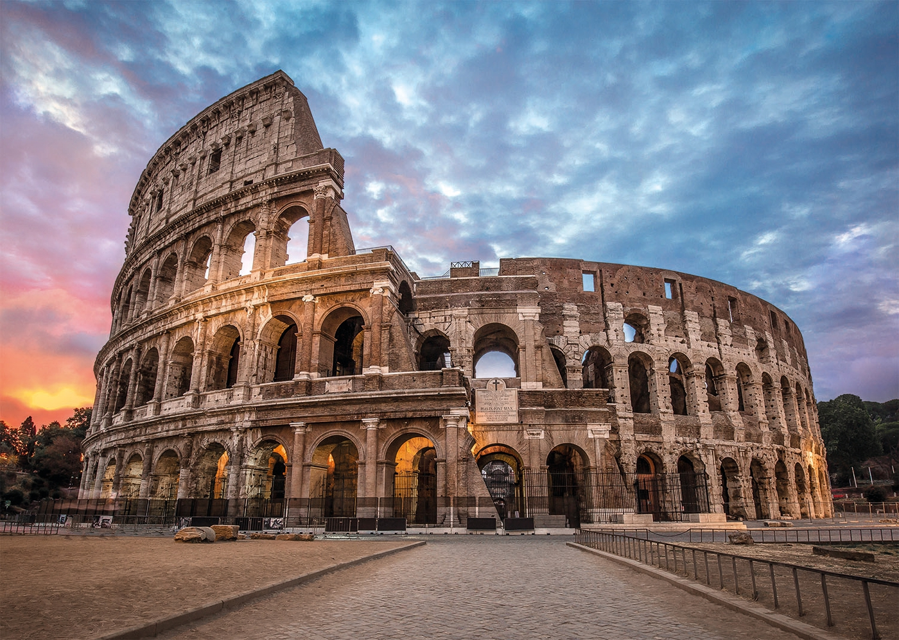

Eiffel
Э́йфелева бaшня -металлическая башня в центре Парижа, самая узнаваемая его архитектурная достопримечательность. Названа в честь главного
конструктора Гюстава Эйфеля; сам Эйфель называл её просто «300-метровой башней» (tour de 300 mètres).
More
Parthenon
Парфенон-памятник античной архитектуры, древнегреческий храм, расположенный на афинском Акрополе, главный храм в древних Афинах,
посвящённый покровительнице этого города и всей Аттики, богине Афине.
More
Big Ben
Биг-Бен — популярное туристическое название часовой башни Вестминстерского дворца. Официальное название башни с 2012
года — Башня Елизаветы, или Елизаветинская башня, один из самых узнаваемых символов Великобритании.
More

Colosseum
Колизе́й, или амфитеатр Флавиев — амфитеатр, памятник архитектуры Древнего Рима, наиболее известное и одно из самых
грандиозных сооружений Древнего мира, сохранившихся до нашего времени. Находится в Риме, в низине между Эсквилинским,
Палатинским и Целиевым холмами.
More
Torre pendente di Pisa
Пиза́нская башня — колокольная башня, часть ансамбля городского собора Санта-Мария-Ассунта в городе Пиза, получившая
всемирную известность благодаря непреднамеренному наклону.
More

Atomium
Ато́миум — одна из главных достопримечательностей и символ Брюсселя. Атомиум был спроектирован к открытию Всемирной
выставки 1958 года архитектором Андре Ватеркейном как символ атомного века и мирного использования атомной энергии и
построен под руководством архитекторов Андре и Мишеля Полаков.
More
Tower Bridge
Та́уэрский мост, или Тауэр-бридж, — комбинированный подвесной и разводной мост в центре Лондона над рекой Темзой,
недалеко от Лондонского Тауэра. Иногда путают с Лондонским мостом, расположенным примерно в 0,8 км выше по течению.
Строительство началось в 1886 году; открыт в 1894 году.
More